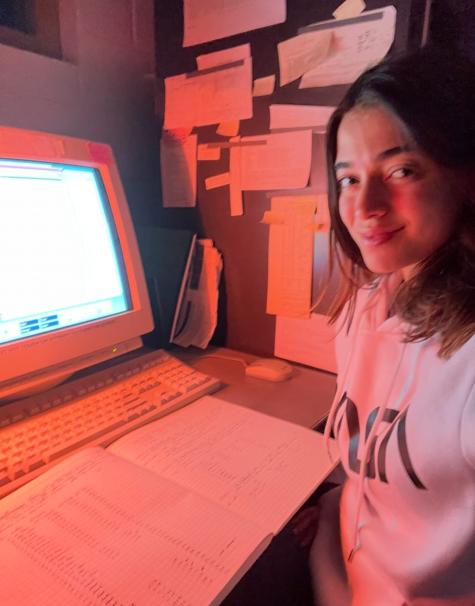
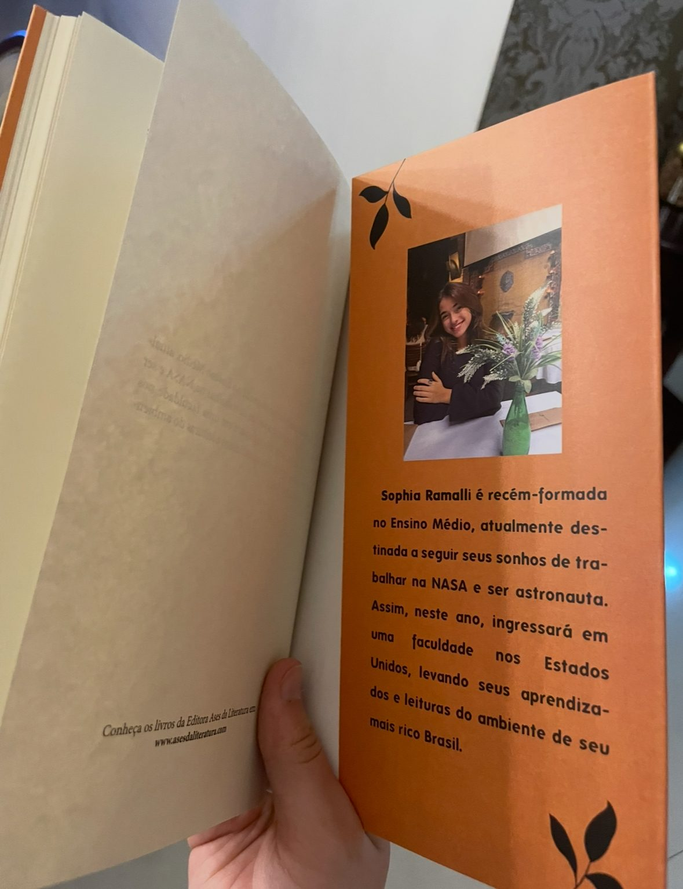
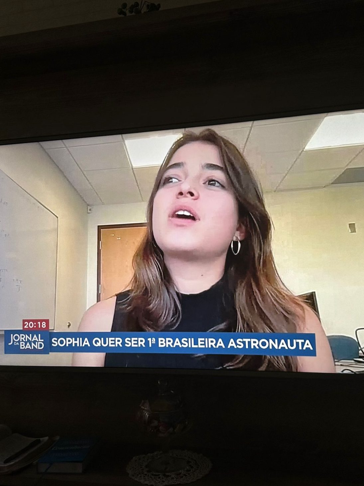
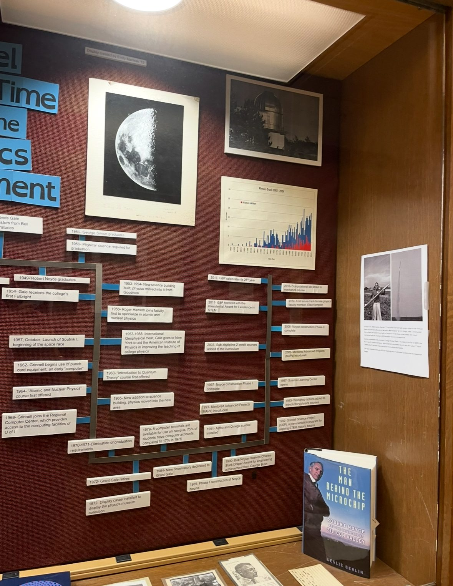
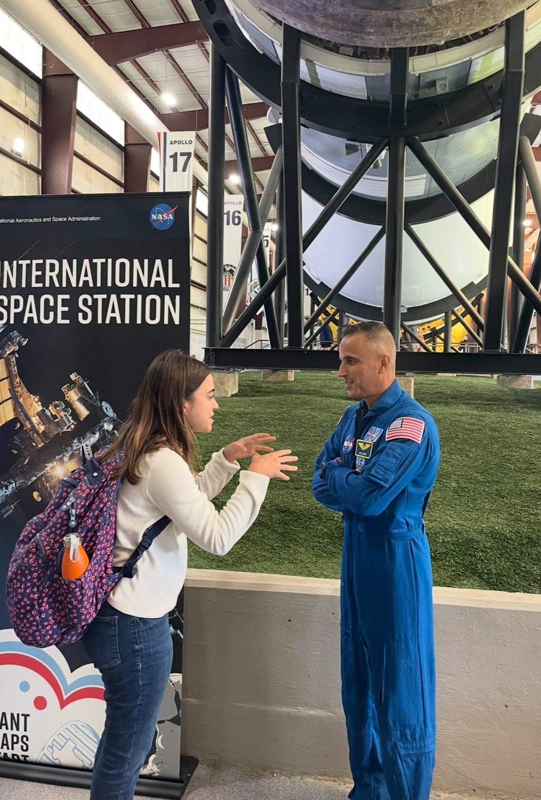

Research
Astronomy at Grinnell's observatory, NASA mission design, scientific writing in Portuguese, Brazilian national TV coverage, and the work I did to put Dana Ulery '59, the first female engineer at NASA JPL — back on the wall at her alma mater. The physics-and-everything-around-it half of "physics major at Grinnell."
M-dwarf stars · Grant O. Gale Observatory

Spectroscopy of M-dwarf stars
Stellar spectroscopy research at the Grant O. Gale Observatory at Grinnell College, under the supervision of Prof. Cadmus. M-dwarfs are the most common stars in the galaxy and the most promising hosts for potentially habitable exoplanets - so their spectra matter a lot more than their dim magnitude suggests.
The work involves taking long-exposure spectra through the observatory's telescope, calibrating them against standard stars and extracting information about stellar atmospheres and variability. It's real observational astronomy on real data, on the same instruments professional astronomers learned on.
NASA L'SPACE · Mission concept design
Lucy Student Pipeline Accelerator & Competency Enabler.
Selected for NASA's flagship undergraduate mission-design program, where student teams work under NASA mentorship to design, document and propose real space science missions. Systems engineering, mission concept reviews and proposal writing at a NASA-pipeline standard.
Authored publications
Book — Chronicles & Essays (Portuguese)

A collection of chronicles and essays about Brazilian and world society, economy and politics. Published by Ases da Literatura (Brazil). This isn't a technical book — it's where I write about the other things I think about when I'm not building rockets. My author bio and photo appear on the inside back cover.
Scientific articles — Jovens Cientistas Brasil
Published on Jovens Cientistas Brasil, a Portuguese science publication journal.
Foguete Híbrido e Combustível Sólido
How a solid fuel grain generates thrust via oxidation. Covers Newton's Third Law, propulsion theory, and comparative analysis of solid, liquid, and hybrid rocket engines, from the ignition transient to throttling to combustion stability.
Simulador da Gênesis do Universo: Acelerador de Partículas
Particle accelerators as instruments for simulating the earliest moments of the universe. What happens when you recreate the conditions of the early cosmos in a controlled experiment and what that tells us about the physics we still don't understand...
Also authored: an article on general and special relativity for the same publication.
Media coverage

"Sophia quer ser 1ª brasileira astronauta."
Featured on Jornal da Band, a major Brazilian national newscast, under the headline "Sophia wants to be the first Brazilian female astronaut." Coverage highlighted the path from Brazilian STEM education to US undergraduate research and the pipeline gap that makes that path harder than it should be for Brazilian women in science. Watch the segment → · LinkedIn post →
Dana Ulery '59 — reclaiming a hidden figure

The first woman engineer at NASA JPL was a Grinnellian. Nobody at Grinnell knew.
Dana Ulery '59 graduated from Grinnell College and went on to become the first female engineer at NASA JPL, working on the Ranger and Mariner mission tracking systems at the height of the space race. She was the only female engineer hired at JPL for the next seven years. And yet, at her alma mater — the same physics department that shaped her. Ulery's contribution was nowhere on the walls, nowhere in the honored alumni, nowhere in the public record.
I pushed Grinnell to recognize her. I emailed Dr. Federico Rossi at JPL (a former Stanford ASL researcher — our paths later converged through ASL) to ask about funding for an honorary event. He pointed me toward Dr. Shannon Statham at JPL, and I tracked her down to make it happen. Together we organized a virtual honorary event for Dana while she was still alive to receive it; she joined us online. The department's historical timeline display now features Dana Ulery as the first woman represented in Grinnell physics history. Alongside her is a photo of me with my Tripoli L1 rocket — the second woman on the wall. A quiet pass of the baton, 66 years apart. Read the full Grinnell College feature →
NASA · up close

Next
Applying to PhD programs in mechanical engineering for Fall 2027 - research interests spanning autonomous spacecraft, control systems and hardware-software co-design.